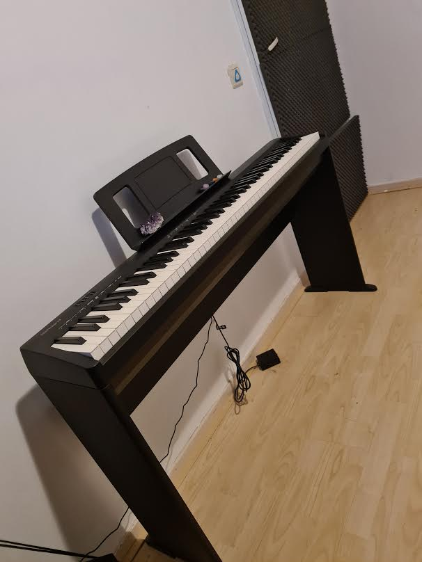
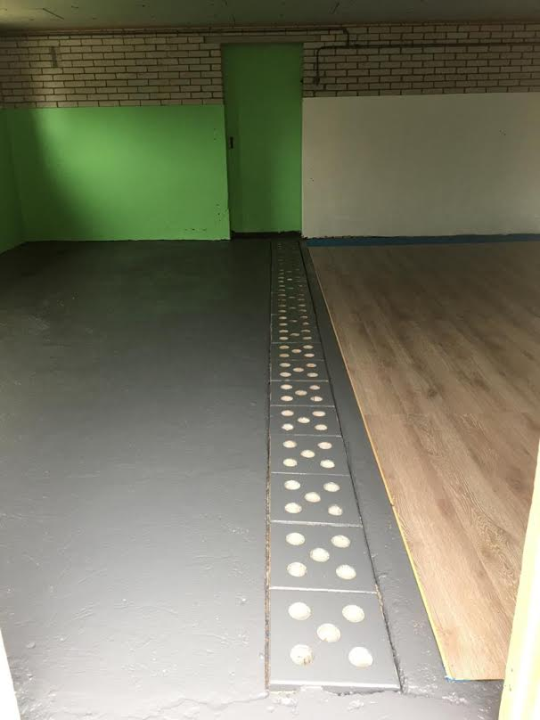
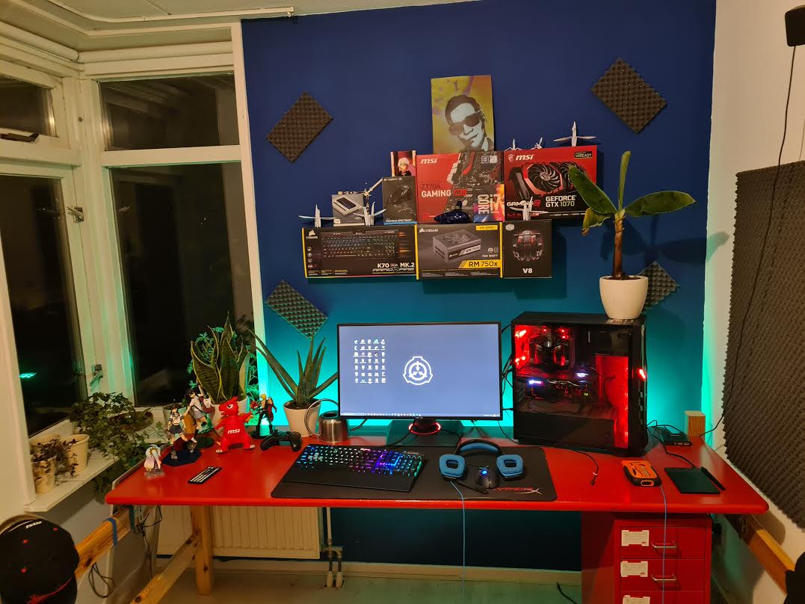
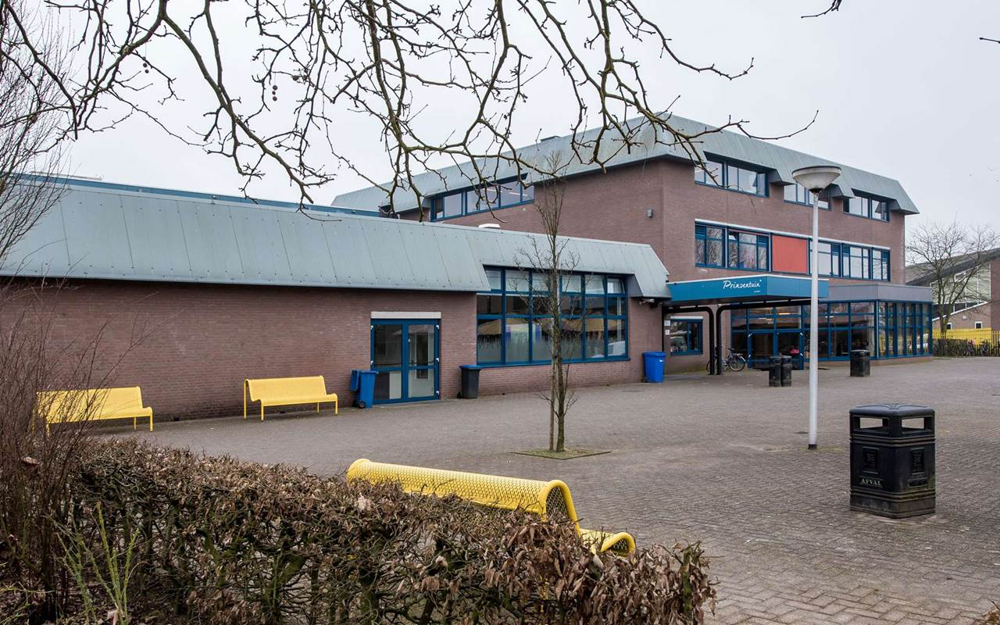
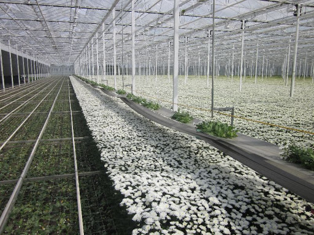

Mijn naam is Luuk Schouten, ik ben geboren in Andel en daar woon ik nu nogsteeds, ik ben je gemiddelde persoon en er is niet veel opmerkelijks aan mij, verder heb ik grote interesse in technologie en hou ik van nieuwe dingen ontdeken, dit is een van de redenen dat ik voor deze opleiding heb gekozen. Ik ben geinteresseerd in veel dingen en heb daardoor te weinig tijd om alles te doen wat ik wil, Mijn grootste probleem is tijd te kort en om dat probleem op te lossen moet ik veel geld verdienen. Een van mijn levensdoelen is om te kunnen doen wat ik wil wanneer ik wil. Voor de rest ben ik momenteel bezig met mijn eigen lab maken, mensen met ambitie zoeken en mijn doelen en plannen uitwerken/uitschrijven net als de gemiddelde persoon? Zoals ik al zei, ik heb te weinig tijd om alles te doen wat ik wil en zal ook niet alles wat ik wil doen omschrijven in deze opdracht aangezien ik dan net zo goed een boek kan schrijven. De bedoeling was eigenlijk dat ik naast deze tekst een foto van mezelf zou plaatsen, maar aangezien ik geen foto's van mezelf heb (behalve degene op de home pagina) mag je naar het witte vlak staren en zelf je verbeelding gebruiken --->
Mijn hobby's?, mijn hobby's bestaan grotendeels uit series/films kijken en gamen net zoals de gemiddelde consument van de samenleving, daarnaast heb ik ook nog "productieve" hobby's (productiviteit is relatief dus vandaar de aanhalingstekens.). Ik heb een aantal jaar op breakdance gezeten(Zie Home page foto) en heb een piano in mijn kamer staan, daarnaast hou ik van wetenschap, voornamelijk zelf expirimenteren met dingen en kijken wat de uitkomst is. Daarom ben ik momenteel een lab aan het maken, nu denk je waarschijnlijk "wat bedoel je met lab", nou, het is een lang verhaal maar om het kort te houden; we hadden vroeger een boerderij alleen al het vee en de machines zijn verkocht dus ik ben de oude koeienschuur aan het ombouwen tot lab, hier in ga ik met specifiek gekozen mensen werken aan projecten van bio tot robots etc etc. Naast die hobby hou ik van talen leren, reizen, muziek luisteren (wie niet???) en nog veel meer andere dingen, maar wanneer trek je de lijn tussen hobby en iets waar je geinteresseerd in bent? Hier onder een foto van mijn Roland FP-10, mijn pc setup en het lab (work in progress.)
  Ah yes, de nostalgie slaat toe (ondanks het pas een jaar geleden is), de opleiding die ik hiervoor gedaan heb is medewerker beheer, aangezien je eerst voor niveau 4 minimaal GL had moeten doen op de middelbare school, een jaar later werden de toelatingseisen verandert naar kader i.p.v GL waardoor ik meteen niveau 4 kon doen inplaats van eerst niveau 3 afmaken. Mijn middelbare school was het "Prinsentuin Andel" (Het heet nu Curio prinsentuin andel.), dit was een groen school, aangezien ik toen ik begon op de middelbare school iets met biologie wou doen, dit veranderde toen mijn broer later een laptop kocht (waar ik grotendeels op zat te gamen/tech videos kijken). Daarna leek dit mij veel interessanter aangezien computers een van de weinig dingen zijn waarvan ik niet fundamenteel van snap hoe het werkt. Later toen ik meer onderzoek er in ging doen kwam ik er achter wat de mogelijkheden hiermee waren en zag ik grote kansen in de toekomst van ict waardoor ik koos voor deze opleiding. (dat is een van de redenen, op de "school" pagina vertel ik hier meer over.) Hier onder een foto van mijn middelbare school.
De enige reden dat ik bijbaantjes heb gehad is om geld te verdienen (zonder ict ervaring is het lastig om goede bijbaantjes te vinden). Nou, nu klinkt dat nogal lui (mijn moeders woorden) alleen laat me het even uitleggen, Ik heb nu tijd om risico's te nemen aangezien ik jong ben, ik ga niet sparen, ik ga investeren, en dan bedoel ik niet alleen in aandelen. (grotendeels van mijn geld ging naar mn pc en piano, lab spullen etc) De bijbanen die ik heb gehad waren in een chrysanten kas en in een restaurant van een verzorgingshuis. Ik kan er heel veel over vertellen maar om het kort te houden; in de kas moest ik chrysanten snijen en in het restaurant moest ik serveren, de vaat doen, schoonmaken en soms eten maken, helaas heb ik geen foto van het restaurant maar bij deze een algemene foto van een chrysantenkas.
